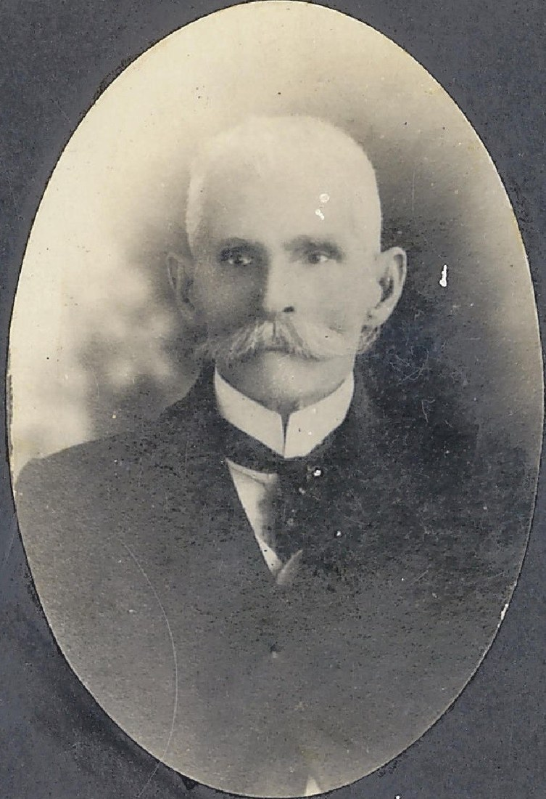

Árbol › Personas › Manuel Naranjo Cabrera · ver en el árbol

Retrato depositado por Luisa Virginia Henríquez Guerra (luisitahg) en Geneanet.
Generación XII
Manuel Naranjo Cabrera
Telde, 1839 – San Sebastián de los Reyes (Aragua), 1913
Uno de los hermanos Naranjo Cabrera, establecido en La Victoria (Aragua, Venezuela). Fue padrino de muchos niños del pueblo y testigo en la boda de su hermano Salvador.
Datos
| Nacimiento | Telde, 27 ago 1839 |
|---|---|
| Defunción | San Sebastián de los Reyes (Aragua, Venezuela), 5 oct 1913, a los 74 años |
| Esposa | Inelda del Nogal Macías (1855-1935) |
| Matrimonio | San Sebastián de los Reyes, 9 mar 1872 (expediente de soltería del 12 feb 1872) |
| Hijos | 8 según el Árbol de FamilySearch; entre ellos León Domingo (1892-1953) y Luisa Elena de Lourdes (bautizada en San Sebastián el 1 nov 1895) |
Su vida en fechas
| 28 jun 1862 | Testigo en la boda de su hermano Salvador en La Victoria. |
| 1865-1871 | Padrino en al menos ocho bautismos de La Victoria. |
| 13 ene 1877 | Padrino de Adrián María de los Dolores, hijo de Rómulo Navarro y Rosario Naranjo (¿sobrina suya?). Imagen |
Documentos y hallazgos
Pulse en una imagen para verla a tamaño completo.
«Manuel Naranjo», firma autógrafa recortada de un documento de Aragua (Venezuela).
Imagen depositada por Luisa Virginia Henríquez Guerra (luisitahg) en su árbol de Geneanet.

«1872. Justificación de soltería y libertad de Manuel Naranjo, español y vecino de la Victoria…» Testigos: Fernando Cabrera, «mi tío carnal», Antonio Cabrera, primo hermano, y Domingo Benítez. Fernando declara que Manuel «ocurrió a la Gran Canaria, donde vive su padre»: Adrián Naranjo seguía vivo en 1872.
Registros parroquiales y diocesanos de Venezuela (FamilySearch): imagen 1 · imagen 2 · imagen 3.
(Manuel) Ignacio, nacido el 17 feb 1873, y Adrián de Jesús, nacido el 7 jun 1874 (Adrián Ramón Naranjo del Nogal, 1874-1975), bautizados en La Victoria; Luisa Elena de Lourdes, bautizada en San Sebastián el 1 nov 1895. Todos hijos de Manuel Naranjo e Ynelda del Nogal.
Registros parroquiales y diocesanos de Venezuela (FamilySearch): imagen 1 · imagen 2 · imagen 3 · registro indexado.
José Sabino se casa con Lourdes Naranjo González, hija de Adrián Naranjo y Caridad González.
Registros parroquiales y diocesanos de Venezuela (FamilySearch): imagen en FamilySearch · registro indexado.